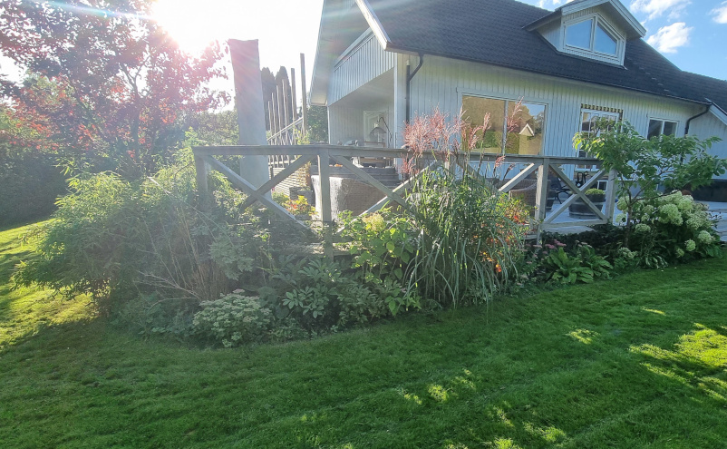

TRÄDGÅRDENS OLIKA DELAR
ENTRÉN
EntrérabattenRabatterna vid entrén är gjorda med tanke på att ha ett åretruntvärde. Fokus ligger på barrväxter och buskar som ger struktur även under de kallaste månaderna.
RUNDLARNA
Runda rabatterI rundlarna är det fokus på perennrer med blomning över så stor del över året som möjligt. Det börjar med vårlökar och slutar med aster och hortensia. Då rabatterna syns innifrån finns här även enstaka lignoser, både vintergröna och lövfällande.
SÖDERSIDAN
 Södersidan
Södersidan
Nedanför altanen på södersidan befinner sig denna rabatt. Den syns inte innifrån och den är också på ett ställe där vi sällan stannar till, ligger mer i ett gångstråk. Därför finns här inga lignoser utan enbart perenner.
ALTANRABATTEN
 AltanrabattenLängs altanen har det planterats mestadels lignoser, både höga och låga, vintergröna och lövfällande, för att få upp grönska och struktur över altankanten och rama in med grönska. Under är låga perenner satta som marktäckare. Enstaka, lite högre, perenner är planterat mellan lignoserna för att ge blommning under sommarmånaderna.
SKUGGRABATTEN
SkuggrabattenI skuggrabatten samsas enstaka lignoser med perenner som vill ha det lite mer skuggigt. Lignoserna ger struktur under vinterhalvåret och några av perennerna håller sig vintergröna.